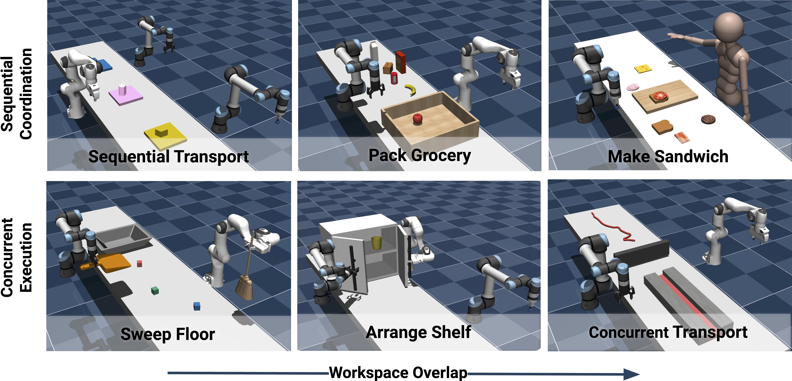

RoCo: Dialectic Multi-Robot Collaboration
with Large Language Models
Mandi Zhao, Shreeya Jain, Shuran Song
We propose a novel approach to multi-robot collaboration that harnesses the power of pre-trained large language models (LLMs) for both high-level communication and low-level path planning. Robots are equipped with LLMs to discuss and collectively reason task strategies; then generate sub-task plans and task space waypoint paths, which are used by a multi-arm motion planner to accelerate trajectory planning. We also provide feedback from the environment, such as collision checking, and prompt the LLM agents to improve their plan and waypoints in-context. For evaluation, we introduce RoCoBench, a 6-task benchmark covering a wide range of multi-robot collaboration scenarios, accompanied by a text-only dataset for agent representation and reasoning. We experimentally demonstrate the effectiveness of our approach: it achieves high success rates across all tasks in RoCoBench and adapts to variations in task semantics. Our dialog setup offers high interpretability and flexibility: in real world experiments, we show RoCo easily incorporates human-in-the-loop, where a user can communicate and collaborate with a robot agent to complete tasks together.

Method Overview
RoCo consists of three main components: 1) Multi-agent dialog via LLMs: each robot is equipped with an LLM that `talks' on its behalf, enabling a discussion of task strategy. 2) LLM-Generated Sub-task Plan: the dialog ends with a proposal of sub-task plan, including optionally a path of task space waypoints, and environment feedback on invalid plans are provided for the agents to improve. 3) Multi-arm motion planning: A validated sub-task plan then produces goal configurations for the robot arms, which are used by a centralized multi-arm motion planner that outputs trajectories for each robot.

Real World Experiments
Example Successful Episodes
Acknowledgements
The authors would like to thank Zeyi Liu, Huy Ha, Zhenjia Xu, Cheng Chi, Samir Gadre for their valuable feedback and support.